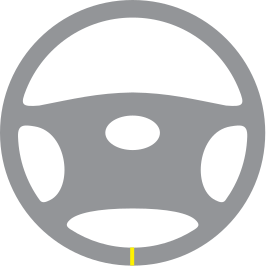
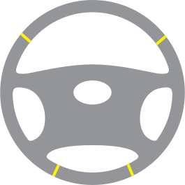
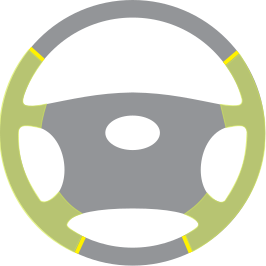
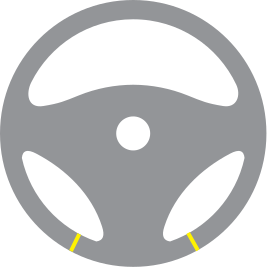
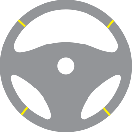
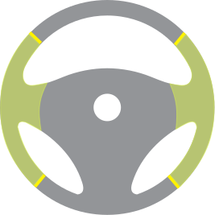
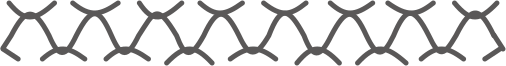

Obszywanie Kierownic
Tapicerka kierownicy odgrywa kluczową rolę w poprawie ogólnego komfortu jazdy. Nie tylko zapewnia wygodę i wsparcie, ale także dodaje nutkę stylu do wnętrza pojazdu. Dobrze zaprojektowana i wysokiej jakości tapicerka kierownicy znacząco poprawia chwyt, zmniejszając ryzyko wypadków i zapewniając bezpieczną i przyjemną podróż.
Galeria Moich Prac

Jakiego materiału używamy?


Termowinyl to jest sztuczna skóra na podstawie kauczuku. Dzieki swoim wlasciwosciam ten material jest bardzo wytrzymały, odporny na ścieranie, odporny na promieniowanie słoneczne zarysowania, plamy i zachowuje atrakcyjny wygląd przez długi czas; nie wymaga specjalnej pielęgnacji. Przewyższa właściwościami skórę ekologiczną i inne analogi.
Przykłady designu obszycia kierownic
Etap I - Wybór materiału (gładka, perforowana ekoskóra) oraz ilość łączeń
Jedno łączenie
Warianty obszycia:
- Całkowicie gładką ekoskórą.
- Całkowicie perforowaną ekoskórą.
250zł
Cztery łączenia
Warianty obszycia:
- Całkowicie gładką ekoskórą.
- Całkowicie perforowaną ekoskórą.
300zł
Cztery łączenia
Warianty obszycia:
- Góra i dół obszyte gładką ekoskórą,
boki - perforowaną.
350zł
Dwa łączenia
Warianty obszycia:
- Całkowicie gładką ekoskórą.
- Całkowicie perforowaną ekoskórą.
250zł
Cztery łączenia
Warianty obszycia:
- Całkowicie gładką ekoskórą.
- Całkowicie perforowaną ekoskórą.
300zł
Cztery łączenia
Warianty obszycia:
- Góra i dół obszyte gładką ekoskórą,
boki - perforowaną.
350zł
Etap II - Wybór koloru nici
Kolor nici - czarny.
0zł
Kolor nici - jeden z dostępnych kolorów.
20zł
Kolor nici - "BMW" (sklada się z trzech kolorów)
50zł
Etap III - Wybór rodzaju szwu
Szew "Makrama"
0zł
Szew "Sportowy"
0zł
Etap IV - Stan kierownicy
Jeśli kierownica, która ma być obszyta, posiada tzw. "skręty" - gąbczaną część kierownicy oddzielającą się od metalowego karkasu, co może wpłynąć na bezpieczeństwo i komfort podczas jazdy. Usunięcie takiego defektu kosztuje 35zł.